Vào tháng 10 năm 1951, bác sĩ Alain Bombard 27 tuổi (Hiện đang là đại biểu của Pháp tại nghị viện Châu Âu), một mình trên chiếc bè bằng cao su, không nước uống, không lương thực... Ông quyết tâm vượt đại dương trong vai một người “đắm tàu tự nguyện” để thí nghiệm xem giới hạn sức chịu đựng của con người khi cần phấn đấu để tồn tại thì lớn đến đâu. Chiếc bè của ông trôi lênh đênh theo chiều gió và bị đưa đẩy bởi các dòng hải lưu. Đói thì câu cá ăn, khát thì uống nước biển (?) hoặc nước ép từ thân cá. Thiếu Vitamin thì ăn rong tảo. Sau 65 ngày một mình vật lộn với sóng, gió, mưa, nắng, đói, khát, bệnh tật... và ghê gớm nhất là sự cô đơn, sợ hãi, cuối cùng, ông cập bờ vào một nơi thuộc quần đảo Antilles ở Trung Mỹ, tuy kiệt sức nhưng vẫn tỉnh táo.
Kỳ công của Alain Bombard đã giải quyết mấy vấn đề quan trọng, nhằm giúp con người chẳng may lâm nạn trên biển có thể sống sót. Sự việc này đã giúp ông đưa ra những nhận định sau:
- Người ta có thể đối phó với sóng lừng và bão tố chỉ với bè cao su.
- Bác bỏ định kiến cho rằng con người không thể uống được nước biển (ông đã uống nước biển trong tuần đầu trong khi chờ mưa. Tuy nhiên vấn đề này còn phải xem lại, vì cho đến nay, các nhà khoa học vẫn khẳng định là nước biển không uống được)
- Giải quyết cơn khát bằng nước ép từ thân cá (nó không mặn như chúng ta nghĩ) và (dĩ nhiên là) nước mưa.
- Thực phẩm thì lấy từ cá, rong tảo và chim biển.
- Quan trọng nhất là giải quyết được vấn đề tư tưởng. Phải giữ được lòng tin và tinh thần phấn đấu. Phần đông nạn nhân bị chết vì kinh hoàng, lo sợ dẫn đến điên loạn. Họ chết trước khi nguồn sinh học trong con người thật sự cạn kiệt. Họ cần phải tin tưởng rằng: Với ý chí và nghị lực, họ có thể làm nên những chuyện phi thường.
TAI NẠN TRÊN BIỂN
Trên hải trình của các bạn, dù là tàu lớn hay nhỏ, cũng có thể xảy ra những tai nạn bất ngờ như: hai tàu đâm vào nhau, chạm phải đá ngầm, va vào băng trôi (điển hình như vụ tàu Titanic), gặp gió bão, máy tàu hỏng hóc... Nếu lọt vào vùng có chiến sự thì có thể bị đánh đắm, trúng thủy lôi... Và hậu quả có thể dẫn đến tàu bị lật chìm.
Khi xảy ra sự cố vì bất cứ lý do gì, thì:
- Lập tức phát tín hiệu (bằng bất cứ phương tiện gì) cầu cứu khẩn cấp với mã điện quốc tế SOS.
- Cố gắng làm chậm tốc độ chìm của tàu bằng cách đóng các cửa thông ra biển, các ống thông khí và thoát khí... Tận dụng hết công suất của các máy bơm nước. Để kéo dài thời gian chờ cứu viện.
- Nếu là những tàu thuyền lớn, thời gian chìm khá chậm. Các bạn cần thông báo cho toàn thể hành khách mang phao cứu sinh chuẩn bị rời tàu. Hạ xuồng cứu sinh xuống. Ưu tiên cho trẻ em, phụ nữ và những người già yếu. Không nên hoảng loạn.
- Nếu máy tàu chưa hư hỏng, hãy cố gắng chạy về phía đất liền hay hải đảo nào gần nhất, càng gần càng tốt.
NHẢY XUỐNG NƯỚC
Nếu là mùa lạnh (hay đang ở vùng biển lạnh), trước khi nhảy xuống nước, nên mặc nhiều quần áo (nếu có quần áo chống thấm nước càng tốt), đội mũ, mang bít tất và dĩ nhiên là phải mang phao cứu sinh.
Khi nhảy xuống nước thì nhảy thẳng đứng, chân xuống trước, hai chân khép lại, mắt nhìn về phía trước, hai tay ôm choàng trước ngực, đè lên phao cứu sinh. Không nên nhảy cắm đầu xuống như trong hồ bơi. Bịt mũi lại đề phòng sặc nước.
Nếu có thể được thì nên chọn hướng dưới gió để tránh gió thổi va đập vào tàu.
Nếu là tàu lớn, sau khi xuống nước, cần rời xa ngay mạn tàu. Vì khi tàu chìm, sẽ tạo thành một luồng nước xoáy rất mạnh, hút theo tất cả những vật thể gần đó.
Sau khi xuống nước, mọi người nên tụ tập lại gần nhau để có thể nương tựa nhau, giúp đỡ và động viên nhau... Và nhất là những toán cứu hộ sẽ dễ dàng nhìn thấy cũng như dễ dàng trong việc cứu giúp các bạn. Chia nhau các mảnh gỗ hay các vật thể trôi nổi bềnh bồng trên mặt nước để tăng cường lực nổi của mình.
SỬ DỤNG PHAO CỨU SINH
Khi gặp tai nạn trên biển, cần phải nhảy xuống nước để thoát thân thì cho dù bạn là một tay bơi lội cự phách, cũng cần phải mang phao cứu sinh để duy trì sức lực, kéo dài thời gian sinh tồn trên mặt nước.
Phao cứu sinh có nhiều loại nhiều kiểu khác nhau: có loại thổi khí bằng miệng, có loại sử dụng hơi nén (chỉ cần giựt mạnh chốt bình khí nén là phao tự phồng lên), có loại làm bằng những vật liệu mà tự thân nó đã có một lực nổi nhất định.
Khi gặp tình huống nguy hiểm, lập tức thông báo cho mọi người trên tàu biết để mang phao cứu sinh. Dành những loại phao có độ nổi cao cho trẻ em, phụ nữ và người già. Giúp họ mang phao, cột dây, gài nút, gài khóa, hướng dẫn sơ bộ... Những người biết bơi nên sử dụng loại phao hỗ trợ, tuy lực nổi thấp, nhưng tiện cho việc thao tác trong khi bơi lội.
Nếu thiếu phao cứu sinh, những người biết bơi nên tự tìm hay chế tạo cho mình những chiếc phao cứu sinh bằng cách tìm những thùng rỗng, can rỗng, túi nylon, các vật liệu xốp, nhẹ, có độ nổi cao... dùng dây cột lại với nhau. Cũng có thể thổi nhiều túi nylon nhỏ, cho vào hai ống quần rồi cột túm lại. Khi sử dụng loại phao này, không được nhảy mạnh xuống nước vì lực va đập sẽ làm vỡ túi khí, phao sẽ mất tác dụng.
(Xin tham khảo thêm phần “LÀM BÈ ĐƠN GIẢN)
SỬ DỤNG XUỒNG & BÈ CỨU SINH
Khi xảy ra tai nạn trên biển, xuồng hay bè cứu sinh là phương tiện tốt nhất để chúng ta thoát hiểm. Tuy nhiên, để cho an toàn và hiệu quả cao, các bạn cần biết một số điều sau:
- Nếu xuồng cứu sinh được làm bằng gỗ hay sợi thủy tinh, khi sử dụng, phải thả từ từ xuống biển. Nếu thả bằng cần cẩu thì nên cho một ít trẻ em hay phụ nữ yếu sức ngồi vào rồi điều khiển cho xuồng xuống từ từ (những người này không thể nhảy thẳng xuống biển).
- Nếu xuồng hay bè cứu sinh được làm bằng cao su thổi khí (thường là khí nén) thì có thể ném thẳng xuống biển. Nhưng trước khi ném, cần có một sợi dây dài buột bè với tàu đề phòng khi ném xuống nước, vì nhẹ nên dễ bị gió thổi trôi đi.
- Thuyền trưởng hay các phụ tá, thủy thủ... nên chuẩn bị cho mỗi xuồng hay bè cứu sinh một số thức ăn, nước uống và dụng cụ mưu sinh như: vũ khí, đèn pin, hỏa pháo, kính phản chiếu, pano màu, dao, mái chèo, thuốc cấp cứu,... và một sợi dây dài cột sau xuồng hay bè cứu sinh, để nhỡ có người rơi xuống nước thì họ có thể bám vào đó để cho chúng ta kéo lên.
- Sau khi hạ xuồng hay bè cứu sinh xuống nước, cần cử hai người khỏe mạnh, bơi lội giỏi, một người leo lên bè và một người bơi chung quanh bè để giúp đỡ những người khác leo lên.
- Nếu số lượng người nhiều hơn tải trọng của xuồng hay bè cứu sinh những người bơi lội giỏi nên mang phao cứu sinh và bơi theo xuồng, nếu mệt thì bám nhẹ vào mạn xuồng.
- Sau khi lên xuồng, tuyệt đối tuân theo sự hướng dẫn của các thủy thủ, ở đâu thì ngồi yên đó, không được chen lấn, chạy tới chạy lui, chồm ra mạn xuồng...
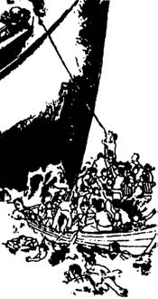
- Nếu trước đó, tàu đã kịp phát tín hiệu cầu cứu thì những toán cứu hộ sẽ đến và họ sẽ ưu tiên lùng sục khu vực bị tai nạn trước tiên, cho nên sau khi lên xuồng, các bạn không nên chèo xuồng đi quá xa mà nên thả chập chờn chung quanh khu vực tai nạn, trừ khi các bạn biết hướng vào đất liền hay hải đảo hoặc nhìn thấy các ánh đèn (nếu là ban đêm).
- Cử người luân phiên tát nước trong xuồng cứu sinh ra ngoài.
- Cắt cử người luôn luôn quan sát trên không cũng như trên biển, nếu thấy bóng dáng của máy bay hay tàu thuyền, lập tức phát tín hiệu cầu cứu. Nếu trời nắng tốt, thì gương phản chiếu hay một miếng kim khí đánh bóng là hiệu quả nhất (xem mục LIÊN LẠC VỚI PHI CƠ), nếu không có thì dùng khói, khói màu, vải màu sáng... thu hút sự chú ý của họ. Ban đêm có thể dùng lửa hay hỏa pháo phát sáng.
- Điều quan trọng nhất là phải biết đoàn kết, động viên, an ủi và quan tâm giúp đỡ lẫn nhau. Có như thế thì các bạn mới có thể vượt qua mọi gian lao để cùng nhau sống sót.
BƠI VÀO BỜ
Nếu các bạn có thể định hướng hay nhìn thấy bờ và có khả năng hoặc tình thế buộc phải bơi vào bờ, các bạn hãy:
- Cố gắng tìm một cái phao hay vật nổi để bám vào.
- Tận dụng hướng gió hay dòng chảy của hải lưu.
- Dùng phương pháp bơi ếch nhẹ nhàng thoải mái để tiết kiệm năng lượng.
Nếu gặp những cơn sóng bình thường.
- Bơi sau lưng những ngọn sóng.
- Khi sóng vỡ ra, nếu cần thì lặn xuống để vượt qua.
Nếu gặp sóng lớn.
- Bơi vào giữa hai ngọn sóng.
- Cố gắng bơi sát ngọn sóng.
- Nếu ngọn sóng từ hướng biển tiến nhanh vào gần (sau lưng các bạn), hãy nín hơi lặn xuống chờ qua khỏi thì trồi lên giữa hai ngọn sóng và bơi tiếp. Nếu không, khi ngọn sóng vỗ vào lưng các bạn, sẽ làm cho các bạn lộn nhào.
THẢ NỔI
Để bảo toàn sinh lực trong khi bơi, các bạn phải biết thư giãn nghỉ ngơi bằng cách thả nổi. Tất cả mọi người trong chúng ta đều có thể thả nổi, ngay cả những người không biết bơi, vì nó không đòi hỏi sức khỏe cũng như sự luyện tập nhiều.
Trong vùng nước tĩnh lặng, các bạn có thể thả ngửa nhẹ nhàng để nghỉ ngơi, giúp bạn lấy lại sức lực hay tiết kiệm năng lượng. Nhưng nếu trong những dòng hải lưu hay sóng lớn ở giữa biển, các bạn không thể thả ngửa mà chỉ có thể thả nổi theo thế bơi đứng nhẹ nhàng.
Các bạn cần thả nổi khi bị lật thuyền trong đêm tối, không thể định hướng để bơi vào bờ hoặc các bạn thả nổi để nghỉ ngơi hồi sức sau khi bơi một chặng đường dài. Thả nổi cũng giúp bạn bảo tồn sinh lực để có thể ở lâu dưới nước trong khi chờ người đến cứu hay tình thế cải thiện hơn.
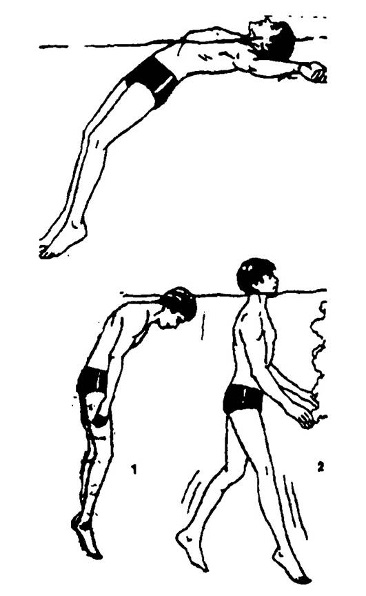
Sẽ dễ dàng hơn trong việc thả nổi nếu các bạn có một cái phao hay các trang thiết bị, vật liệu nổi... Nếu không, các bạn có thể dùng quần dài của mình để làm tạm một cái phao (theo hình minh họa) để tạm nghỉ.
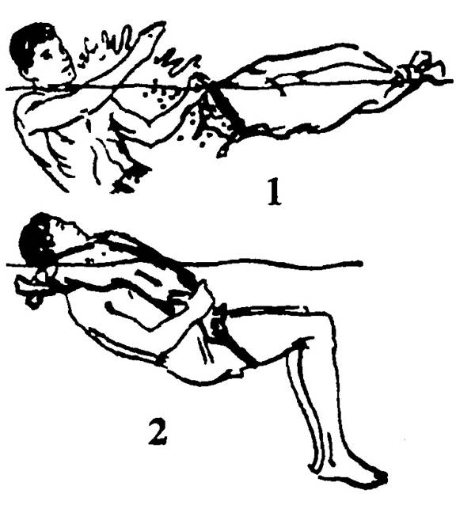
Sự giảm nhiệt
Các bạn chỉ có thể ở lâu trong nước nếu nhiệt độ nước không dưới 70oF, tức tương đương với 21,5oC, nhưng nếu nhiệt độ dưới 68oF (# 20oC) sẽ dẫn đến tình trạng giảm nhiệt rất nguy hiểm nếu cơ thể không được bảo vệ. Nếu có áo quần, những triệu chứng xấu sẽ xuất hiện sau 8 giờ ở trong nước, nếu không có áo quần thì chỉ sau 4 giờ. Nếu nhiệt độ xuống mức 57oF (#15oC) thì thời gian tồn tại không quá 2 giờ.
Khi các bạn ở trong nước lạnh, hãy giữ cho đầu nổi lên mặt nước, cố gắng bảo vệ cổ, ngực, nách, háng (là những phần cơ thể dễ bị cái lạnh xâm nhập) bằng quần áo dày. Nếu chỉ có một mình thì co đầu gối lên, khoanh hai tay trước ngực và bất động cơ thể để giữ thân nhiệt. Nếu có 2 - 3 người, hãy ôm nhau cho đỡ lạnh (dĩ nhiên là các bạn cần có phao hay các trang thiết bị làm nổi).
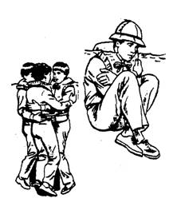
TỒN TẠI TRÊN BÈ
Có thể do đắm tàu, do tai nạn, do phi cơ phải đáp khẩn cấp xuống biển hoặc vì một lý do nào đó mà các bạn đang bị trôi dạt trên biển với một chiếc bè, thì xin các bạn hãy làm theo những hướng dẫn sau đây:
- Cột chặt các vật dụng mà các bạn đang có trên bè, để khỏi bị sóng đánh hay lật bè làm rơi mất.
- Giữ khô quần áo, mang vớ và găng tay, che tất cả những nơi cơ thể tiếp xúc với ánh nắng nếu có thể, vì sức nóng của mặt trời có thể đốt phồng da các bạn.
- Áo quần khô ráo cũng là điều cần thiết giúp chúng ta chống lại với cái lạnh, nhất là về ban đêm.
- Tận dụng bóng mát của buồm hay các vật liệu khác để che nắng, cố gắng làm giảm tối thiểu việc tiếp xúc với ánh nắng, vì rất dễ làm cơ thể các bạn mất nước.
- Kiểm kê toàn bộ lương thực và nước uống, cất giữ một nơi an toàn và thoáng mát, hạn chế ăn uống trong 24 giờ đầu.
- Các bạn có thể lênh đênh trên biển nhiều ngày, cho nên cần phải giữ gìn sinh lực, tránh những hoạt động làm đổ mồ hôi và tiêu hao năng lượng.
- Chuẩn bị một số vật dụng để làm dấu hiệu cho phi cơ hay tàu thuyền (như đã đề cập phần trước).
DI CHUYỂN BẰNG BÈ (HAY XUỒNG CỨU SINH)
Khi di chuyền bằng bè, các bạn cần phải chọn lựa một trong hai phương pháp di chuyển: Hoặc là xuôi theo chiều gió, hoặc là nương theo các dòng hải lưu.
Gió và hải lưu ít khi nào chuyển động theo cùng một hướng, thường thì một thuận và một thì ngược lại. Các bạn cần có một số kiến thức về gió và hải lưu, biết vị trí (tương đối) của mình, biết hướng mình cần đi, biết gió hay hải lưu sẽ đưa mình đến đâu.
Vận dụng các dòng hải lưu
Một chiếc bè không buồm buộc phải bị chi phối bởi các dòng hải lưu, vì vậy các bạn phải biết cách vận dụng nó để nó giúp các bạn trong chuyến hải hành.
Để vận dụng dòng hải lưu, người ta thường sử dụng một cái túi bằng vải dày gọi là “buồm gàu” hay “neo gàu” (sea anchor) để thả xuống nước, luồng nước sẽ làm cho gàu bung ra và đẩy nó đi kéo theo chiếc bè. Khi luồng nước mạnh, kéo bè đi quá nhanh, thì người ta thâu bớt “buồm gàu” lại. Khi luồng nước yếu làm bè đi chậm hay bất động thì người ta mở rộng “buồm gàu” ra.
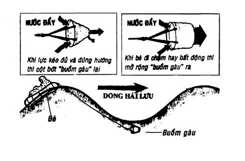
Nếu không có “buồn gàu”, các bạn cũng có thể vận dụng các dòng hải lưu bằng cách làm cho bè ngập một phần trong nước (như xì bớt hơi nếu là bè cao su), cột một số đồ vật cho chìm trong nước để chịu sự tác động của dòng hải lưu nhiều hơn. Nếu may mắn, dòng chảy sẽ đưa các bạn đi qua các tuyến hải hành của tàu thuyền hoặc mang các bạn vào đất liền.
Các dòng hải lưu:
Là những sự trao đổi nước giữa biển này và biển kia, hình thành nên các dòng hoàn lưu như những dòng sông trên biển. Các dòng hải lưu thay đổi theo từng mùa và từng vùng biển khác nhau. Dưới đây là sơ đồ các dòng hải lưu ở Biển Đông.
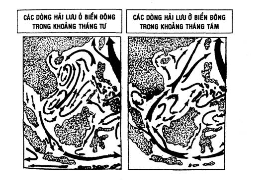
Vận dụng sức gió
Tuy gió là bạn đồng hành của các nhà hàng hải từ ngàn xưa, nhưng nếu chúng ta không nắm vững qui luật của gió thì thay vì đưa chúng ta vào đất liền, gió cũng có thể đưa chúng ta ra xa hơn.
Vùng Biển Đông nước ta nằm trọn trong vùng Đông Nam Á Gió Mùa với hai loại gió chính: Gió mùa Đông Bắc và Gió mùa Tây Nam.
Về cường độ, hai loại gió này thay đổi rất nhiều ở các tháng giao thời (tháng Tư, Năm và tháng Chín, Mười) hướng gió không ổn định.
Gió mùa Đông Bắc hoạt động kéo dài từ tháng Mười đến tháng Tư năm sau.
Gió mùa Tây Nam kéo dài từ tháng Năm đến tháng Mười và do có nguồn gốc đại dương nên trong thời kỳ này có mưa lớn.
Để vận dụng tối đa sức gió:
- Không sử dụng “buồm gàu”
- Thổi bè thật phồng (nếu là bè cao su) làm cho bè càng nhẹ càng nổi cao càng tốt.
- “Hành khách” ngồi thật cao trên bè, để cơ thể có thể hứng gió tối đa.
- Dựng buồm (hoặc các vật liệu khác dùng để bắt gió như buồm). Đây cũng là vật dùng làm dấu hiệu cho các tàu thuyền khác dễ dàng trông thấy.
Trường hợp các bạn đang ở trong tình thế khó khăn, bè không thể nương theo gió hay dòng hải lưu để di chuyển, hãy cố gắng bảo quản và hạn chế khẩu phần lương thực cũng như nước uống, để duy trì sự sống càng lâu càng tốt.
ĐÁNH BẮT TRÊN BÈ
Trong thời gian tồn tại trên bè, cho dù các bạn có hay không có thực phẩm, các bạn cũng cần phải biết một số phương pháp đánh bắt để có thêm thức ăn tươi và bổ sung cho nguồn lương thực của mình càng nhiều càng tốt.
Câu cá
Nếu các bạn chỉ có lưỡi câu nhưng không có mồi, các bạn có thể cột một hay nhiều lưỡi câu ở các độ sâu khác nhau, kéo nhè nhẹ lui tới dưới bè. Những chú cá tò mò hoặc đến trú dưới bè có thể bơi trúng lưỡi câu và bị dính (đây cũng là trường hợp thường gặp khi chúng ta đi câu cá, thỉnh thoảng cũng có những con bị dính ngang hông). Khi bắt được con cá đầu tiên, các bạn mổ bụng lấy lòng ruột móc vào lưỡi câu để làm mồi.
Các công cụ và phương pháp bắt cá khác:
Không có lưỡi câu, các bạn có thể dùng dao, gậy, mái chèo, chĩa, thòng lọng... thậm chí tay trần; để chém, đâm, đập, siết, chụp... những con cá hay các sinh vật biển lảng vảng gần mặt nước quanh bè.
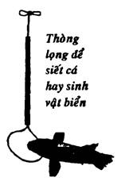
Bắt chim biển:
Các bạn có thể bắt chim biển bằng cách móc mồi (tốt nhất là cá nhỏ) vào một lưỡi câu (hay một vật gì chế tạo như lưỡi câu) đặt trên một vật nổi, nối vật nổi đó vào bè, các loài chim biển nhào xuống đớp mồi thì sẽ bị dính câu. (xin xem phần CHẾ TẠO LƯỠI CÂU).
Nếu có một vật nổi nhẹ và hơi lớn, (ván, thùng rỗng...) các bạn cột kéo theo bè khoảng 5 - 10 mét, trên đó để một thòng lọng nối với bè. Các loài chim biển thường rất bạo dạn, thấy có chỗ nghỉ chân thì sẽ đáp xuống, các bạn hãy giựt thòng lọng để túm lấy.
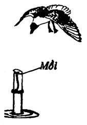
Các bạn cũng có thể nằm bất động giả chết. Những chú chim tham ăn tưởng thật sẽ đáp xuống gần bạn, khi vừa tầm tay thì bất ngờ chộp lấy. Lưu ý là vuốt, cánh, mỏ của nó có thể gây thương tích cho bạn. (Đây là kinh nghiệm của một ngư dân người Hải Nam lênh đênh trên bè gần ba tháng sau khi bị đắm thuyền) (Xin xem thêm phần SĂN BẮN ĐÁNH BẮT).
Rong tảo: Là một nguồn bổ sung vitamin rất cần thiết cho cơ thể chúng ta. Trong nước biển có rất nhiều loại rong tảo, phần lớn đều có thể ăn được. Tuy nhiên, các bạn cũng cần phải biết cách phân biệt cũng như chế biến. (Xin xem phần RONG TẢO )
MÀU SẮC CỦA NƯỚC BIỂN
Khi di chuyển trên biển, chúng ta cũng cần biết một số vấn đề và hiện tượng liên quan đến sự sinh tồn của chúng ta, trong đó màu sắc của nước biển cũng cho chúng ta biết nhiều thông tin quan trọng. Nước biển thường có hai màu chính: Lục và Xanh.
Lục: Khi số lượng vi sinh vật và sinh vật nhiều, độ mặn thấp.
Xanh: Khi sinh vật và vi sinh vật ít, độ mặn cao.
Sắc độ của nước biển (Lục và Xanh) còn tùy thuộc vào:
- Ánh sáng mặt trời và độ sâu của biển (càng sâu càng thẫm màu).
- Sự khác nhau về độ mặn và số lượng sinh vật của các dòng chảy (thí dụ: dòng Gulf và Labrador ở Bắc Đại Tây Dương) cũng làm thay đổi màu sắc của biển.
- Các vùng có rạng san hô ngầm thường có màu hơi vàng.
- Màu sắc của nước biển không chính xác khi thời tiết xấu hoặc âm u.
ƯỚC LƯỢNG KHOẢNG CÁCH
Ở trên biển, khoảng cách mục tiêu thường bị nhiễu bởi hơi nước và vô số hạt nước tạo thành sương tuyết hay sương mù,... cho nên khi ước lượng khoảng cách trên biển, thường không trung thực.
Nhiều mục tiêu các bạn nhìn có vẻ như gần hơn so với thực tế là do:
- Ánh sáng mặt trời chiếu đằng sau lưng các bạn.
- Khi các bạn nhìn xuyên qua nước (ánh sánh bị khúc xạ).
- Không khí quá trong sáng.
Cũng có khi các bạn nhìn thấy mục tiêu có vẻ như xa hơn thực tế là do:
- Thiếu ánh sáng hay do sương mù.
- Thường xuyên nhìn lâu qua những ngọn sóng lớn, nhất là khi ngọn sóng trực diện (thẳng góc) với người quan sát.
Trong trường hợp thời tiết tốt, với mắt thường, các bạn có thể thấy những hình ảnh theo bảng ước lượng khoảng cách dưới đây:
- Khoảng cách 50 mét: Nhìn thấy rõ mắt, mũi, miệng của một người.
- Khoảng cách 100 mét: Hai mắt chỉ còn 2 chấm.
- Khoảng cách 200 mét: Có thể còn thấy mặt.
- Khoảng cách 500 mét: Còn thấy màu sắc quần áo, cờ Sémaphore và đọc được bảng tên của các con tàu trung bình.
- Khoảng cách 800 mét: Con người giống như một que nhỏ. Còn đọc được bảng tên của các con tàu lớn.
- Khoảng cách 1500 mét: Còn thấy đầy đủ con tàu.
- Khoảng cách 3000 - 4000 mét: Còn thấy phần trên của con tàu
- Khoảng cách 11 - 15 km: Chỉ còn thấy ống khói hay cột buồm.
ƯỚC LƯỢNG VĨ ĐỘ BẰNG SAO BẮC ĐẨU
Khi lênh đênh trên các vùng biển ở Bắc Bán Cầu, các bạn có thể nhìn sao Bắc Đẩu để ước lượng chúng ta đang ở Vĩ độ (Bắc) nào. Muốn được như vậy, các bạn lấy điểm Thiên đỉnh và Đường Chân Trời tạo thành hai cạnh của góc vuông, giao nhau ở chính bản thân ta. Ta lấy Đường Chân Trời là 0o và điểm Thiên Đỉnh là 90o, nếu sao Bắc Đẩu nằm ở bao nhiêu độ trong góc vuông thì chúng ta đang ở đúng ngay Vĩ độ đó trên mặt đất (biển).
Trong hình minh họa, chúng ta thấy sao Bắc Đẩu đang ở 45o (giữa Thiên Đỉnh và Đường Chân Trời). Như vậy, chúng ta đang ở 45o Vĩ Bắc.
Cho dù các bạn không có “kính lục phân”, các bạn cũng có thể dùng phương pháp trên để ước lượng khoảng cách khá chính xác bằng cách tính sự chênh lệch của sao Bắc Đẩu sau mỗi đoạn đường di chuyển. Cứ mỗi độ chênh lệch thì tương đương với 60 dặm (miles) hay 90 km trên mặt đất (biển).
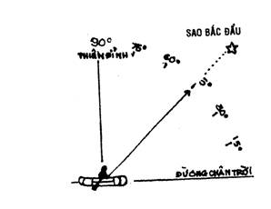
TÌM HẢI ĐẢO BẰNG MÂY
Những đám mây bất động sẽ làm cho chúng ta chú ý vì nó đứng yên một chỗ trong khi các đám mây chung quanh vẫn chuyển động.
Mây bất động thường xuất hiện phía trên các hòn đảo (hoặc đồi, núi ở trên đảo) là do những ngọn gió mang nhiều hơi nước liên tục thổi vào đảo, khi đụng các khối đất ở đảo thì bốc lên cao, gặp khí lạnh thì ngưng tụ lại thành mây (đám mây này bất động là do được cung cấp hơi nước liên tục). Những hòn đảo này nằm dưới Đường Chân Trời nên rất khó thấy.
Sau khi qua khỏi đảo, ngọn gió xuống thấp và ấm lại nên không thể hình thành đám mây khác.
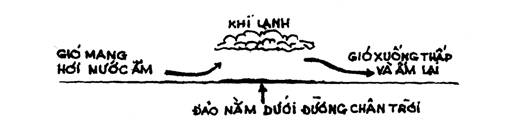
TÌM ĐẤT LIỀN BẰNG CHIM
Các nhà hàng hải ngày xưa họ đi biển mà không có bản đồ và hải bàn, họ chỉ dựa trên kinh nghiệm, sự phán đoán và một số mẹo vặt. Để tìm ra hướng có đất liền, họ mang theo một số chim sống ở lục địa. Khi cần, họ thả chim ra, nếu thấy đất liền, chim sẽ bay thẳng về hướng đó, nếu không, chim sẽ quay trở về thuyền.
ƯỚC ĐOÁN KHOẢNG CÁCH ĐẤT LIỀN BẰNG CHIM BIỂN
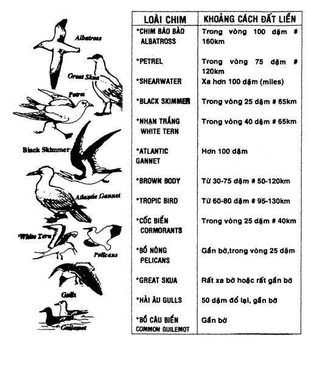
ĐƯA BÈ CẬP VÀO BỜ
Để cập bờ cho an toàn khi bè đã tiến gần đến bờ, các bạn hãy:
- Cố gắng tìm một chỗ khuất gió trên đất liền (hay hải đảo) để đổ bộ.
- Không nên đổ bộ vào hướng ngược với mặt trời, ánh sáng và sự phản chiếu từ biển sẽ làm bạn lóa mắt, không thấy được mục tiêu, dễ bị va đập.
- Chọn những nơi ít sóng cồn (ít bọt trắng) sẽ giúp các bạn cập vào bờ dễ dàng và ít hao sức lực.
- Nếu các bạn buộc phải cắt ngang sóng cồn, hãy hạ cột buồm, cột chặt lại các dụng cụ, mặc quần áo, mang giầy, để hạn chế sự trầy xước do va chạm hay cọ sát có thể xảy.
- Dùng mái chèo hay sào, gậy... để kiểm tra độ sâu, san hô, đá ngầm...
- Kéo “buồm gàu” lên, nhất là khi vượt qua các rặng san hô hay khi đã gần bờ.
- Tránh những khu vực có sóng vỗ mạnh vào vách đá hay những tảng đá.
- Khi bè chuẩn bị cập bờ, các bạn hãy nhìn thẳng về phía trước, ngồi cho thật vững vàng để có thể chịu đựng được những cú va đập khi bè cập bờ.
- Khi bè vừa chạm đất, các bạn hãy nhảy xuống, nương theo những ngọn sóng để kéo bè vào bờ.
CÁCH LẬT LẠI MỘT BÈ CAO SU BỊ ÚP
Khi một bè cao su bị lật úp, nếu không biết cách, một mình bạn sẽ phải loay hoay và khó lòng mà lật lại vì không có thế. Bạn hãy cột đầu một sợi dây ở một bên mạn bè rồi cầm đầu dây còn lại bơi sang bên kia. Leo lên đứng thẳng trên mạn đó, ngửa người ra sau kéo thẳng sợi dây. Khi bè lật lại bạn sẽ bị té xuống nước, hãy coi chừng bè đập vào người.
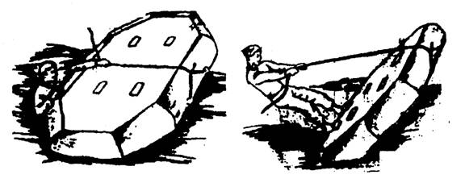